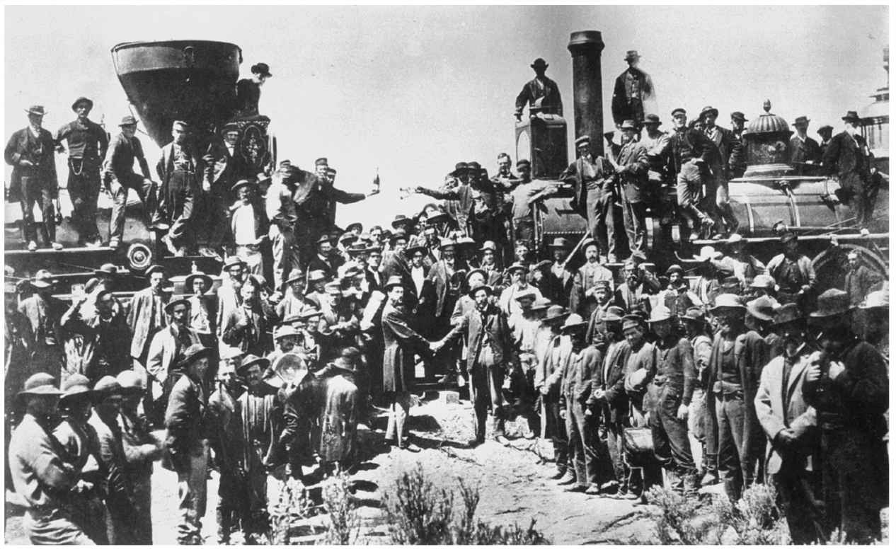

1914年时的欧洲霸权不仅在广度上，而且在深度上也是前所未有的，这一点能从欧洲所实行的经济控制中察觉出来。欧洲已变成世界的银行家，为建造横穿大陆的铁路、开凿沟通海洋的运河、开发矿山、建立种植园提供所需的资金。欧洲不仅成了世界银行，而且已成为世界工厂。1870年，欧洲的工业产量占世界工业总产量的64.7%，而唯一的对手美国仅占23.3%。到1913年时，虽然美国已向前发展，达到了35.8%，但这一年欧洲工厂的产量仍占世界总产量的47.7％。
欧洲资本和技术大量输出的结果是全球经济空前统一：到1914年时，除了在全球陆地上架设了庞大的电报和电话线路网外，还在海底铺设了51.6万多公里的电缆。到1914年时，已有总吨位为5000万吨的3万多艘船只装载货物往返于世界各地。几条运河的开凿便利了世界贸易，其中最重要的是苏伊士运河（1869年）和巴拿马运河（1914年）；前者将西欧到印度的航程缩短了4000英里，后者将纽约到旧金山的距离减少了近8000英里。几条横穿大陆的铁路建成，打开了诸大陆经济开发的大门：美国和加拿大分别于1869年和1885年铺设了第一条铁路；横穿西伯利亚的铁路于1905年建成；柏林到巴格达和好望角到开罗的铁路也于1914年基本铺设完工。

图243 1869年5月10日，联合太平洋铁路公司和中央太平洋铁路公司（现在的南太平洋铁路公司）的最后一段铁路在犹他州的普罗芒托里实现对接。一个值得纪念的场景是，一颗由加利福尼亚纯金制成的道钉打进了铁路，它标志着第一条横贯美洲大陆的铁路的完工。
诸大陆这一经济上的一体化导致了全球生产率的惊人增长。1860年至1913年间，世界工业总产量至少增加了6倍，1851年至1913年间，世界贸易额增加了12倍。不出所料，欧洲在这一经济腾飞中得益最多。虽然得不到有关全球状况的统计数字，但是据估计，1800年，欧洲宗主国的人均收入与殖民地或半殖民地地区的人均收入之比大约是3：1，而到1914年时则增加到约7：1。